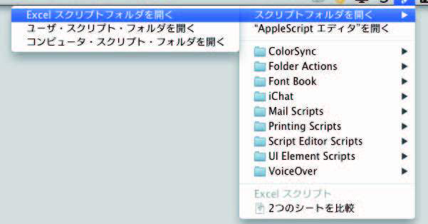
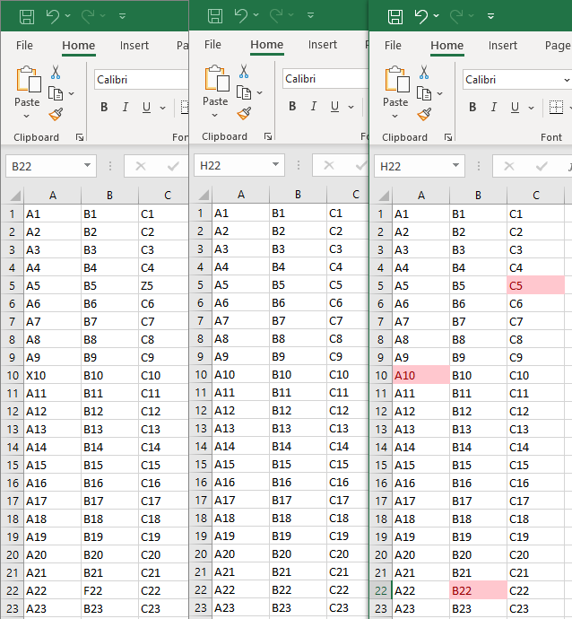

Compare two workbooks in Excel and display the differences
Created by:
Tact System Co., Ltd.
© 2018 TACT SYSTEM Co. Ltd. All Rights Reserved.
URL: https://www.tactsystem.co.jp
There are two versions: AppleScript and VBA.
AppleScript version
Microsoft Excel for Mac 2011
Place this script in Users/[user name]/Documents/Microsoft User Data/Excel Script Menu Items.
Microsoft Excel for Mac 2016
Place this script in Users/[user name]/Library/Scripts/Applications/Excel/.
* With Excel active, select “Open Scripts Folder” -> “Open Excel Scripts Folder” from the script menu to access.

How to use
With the two Excel documents you want to compare open, select Compare Two Sheets from the script menu.
VBA version
Installation
Since this is an Excel Macro-Enabled Workbook, place the workbook anywhere you like.
How to Use
With the two Excel documents you want to compare open, run CompareTwoSheets from the macro.
Alternatively, click on this yellow shape.
Specifications
Microsoft Excel is operated using a macro (VBA).
If there are not two or more workbooks open, an alert dialog will appear and the program will end.
Compares the active sheets of two open workbooks, counting from the beginning.
The range of cells in the sheet is the range used in the worksheet.
The two sheets are copied to a new workbook.
Sets conditional formatting to check whether the values of cells with the same address in each of the two sheets match.
If the cell values are different, dark red text, light red background will be applied.
The original workbook will not be changed.
Operating environment
Recommended operating environment: OS X Mavericks (10.9.5) / Windows
Target application: Microsoft Excel 2011 or later

VBA macro
Sub CompareTwoSheets()
Dim WorkbookCount As Long
WorkbookCount = Workbooks.Count
If WorkbookCount <= 2 Then
MsgBox "open 2 workbooks.", vbCritical
Exit Sub
End If
Dim bookNames(1 To 3) As String
Dim n As Long
n = 1
For Each Wb In Workbooks
If Wb.Name <> ThisWorkbook.Name Then
bookNames(n) = Wb.Name
n = n + 1
End If
If n >= 3 Then
Exit For
End If
Next Wb
Workbooks(bookNames(1)).ActiveSheet.Copy
bookNames(3) = ActiveWorkbook.Name
Dim cellStartAddress1 As String
cellStartAddress1 = Workbooks(bookNames(3)).Worksheets(1).UsedRange.cellS(1).Address(False, False, xlA1, True)
Workbooks(bookNames(2)).ActiveSheet.Copy after:=Workbooks(bookNames(3)).Worksheets(1)
Dim cellStartAddress2 As String
cellStartAddress2 = Workbooks(bookNames(3)).Worksheets(2).UsedRange.cellS(1).Address(False, False, xlA1, True)
With Workbooks(bookNames(3)).Worksheets(2)
.Activate
With .UsedRange
.cellS.FormatConditions.Delete
.FormatConditions.Add Type:=xlExpression, Formula1:="=" + cellStartAddress1 + "<>" + cellStartAddress2
With .FormatConditions(1)
.SetFirstPriority
.Font.Color = RGB(156, 0, 6)
.Interior.Color = RGB(255, 199, 206)
.StopIfTrue = False
End With
End With
End With
End Sub
Click here to download the script.